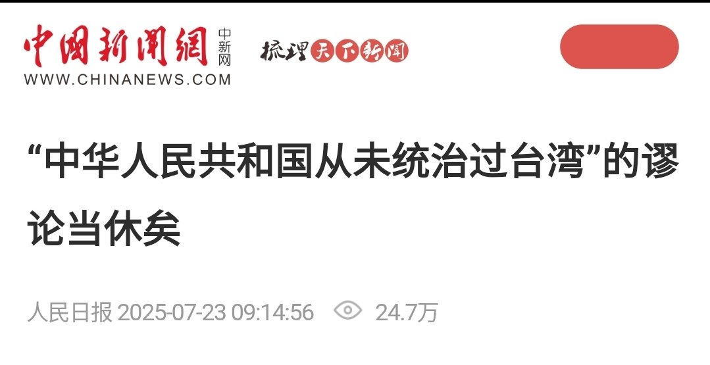

1713
@sss_1713
@sugihara_tatuo 初中的时候还背过，“因为台湾以前和大陆是没有台湾海峡相隔的，所以台湾自古以来便是中国的一部分”，不如大陆漂移假说论证世界是中国的🇨🇳🇨🇳😋😋

杉原 辰雄 🌸⛩️ （淡推中）
@sugihara_tatuo
这种文章也就骗骗傻子。
前面讲些什么“代表”“管辖”给自己加戏，后面说台湾当局仅“事实占有”而非“法理拥有”。轻易就能发现谬误：
首先，多次重复“法理”，却丝毫未加以论证，其心虚暴露无遗😆😆
其次，既然你说“事实”不等于“法理”，那前半部分说一堆PRC对台湾“代表”和“管辖”的事实，是在抽自己脸吗🤡🤡 https://t.co/ppj8TaqBBp